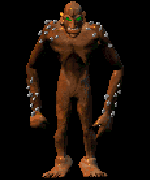

Troll

Covered with knots of lumpy flesh, the troll has powerful arms and razor sharp talons.
Weapon To Use
The Loot
Best:
Nerudite Sword
Mystic Sword
Kraanan Weapons
Attack Spells
Long Sword
Gold Round Shield
Scale Armor
Guantlet
Wand of Healing
Relic of Qor
Wand of Vampiric Shock
Blue Mushroom
Meat Pie
Blue Dragon Scale
Dark Angel Feather
Special Weapon
Info & Tips
Attack:
Normal
Spells:
None
Location:
Many Mainland Areas
Karma:
Evil, -75
HP Requisite:
45+
Tougher Limit:
90